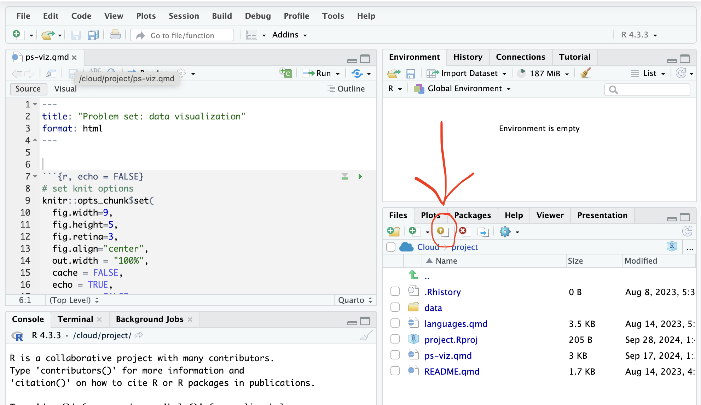
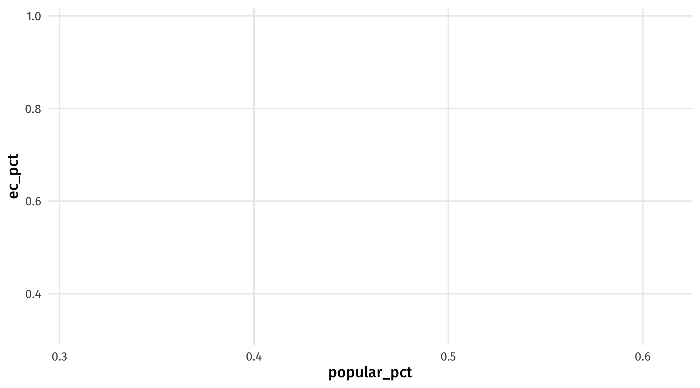
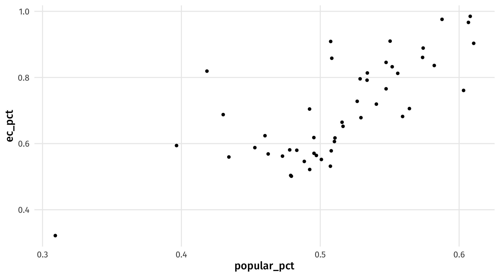
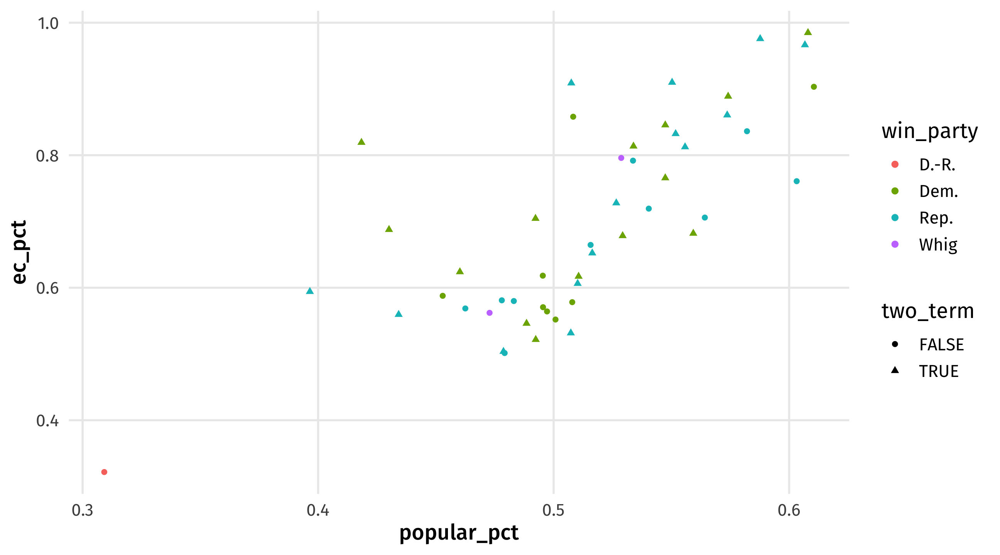
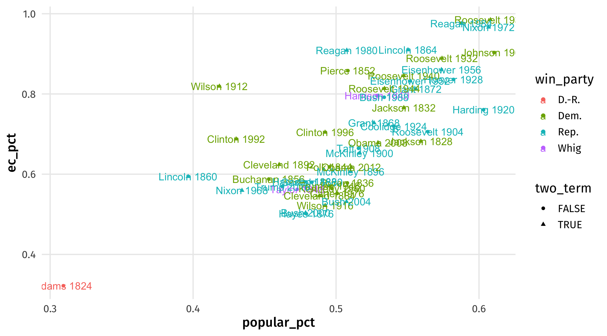
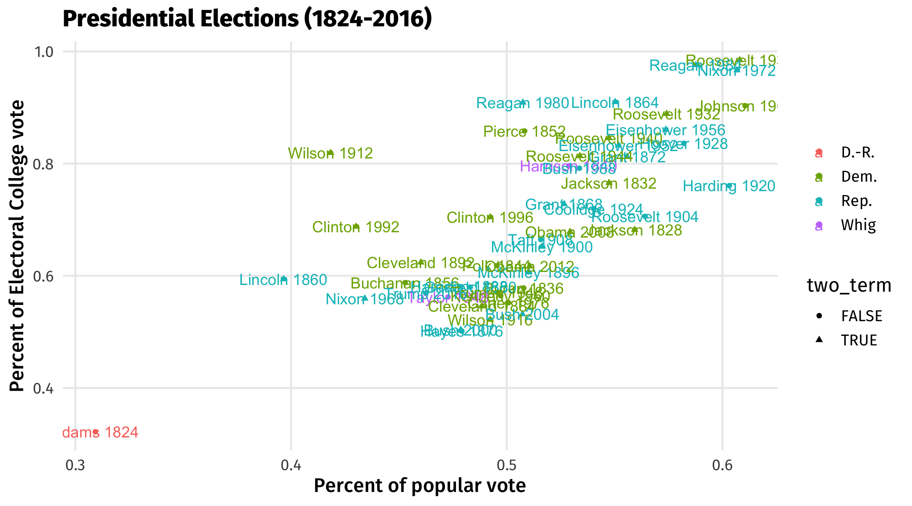
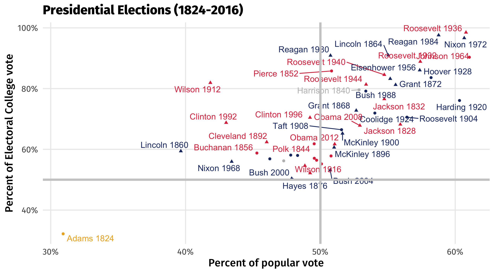
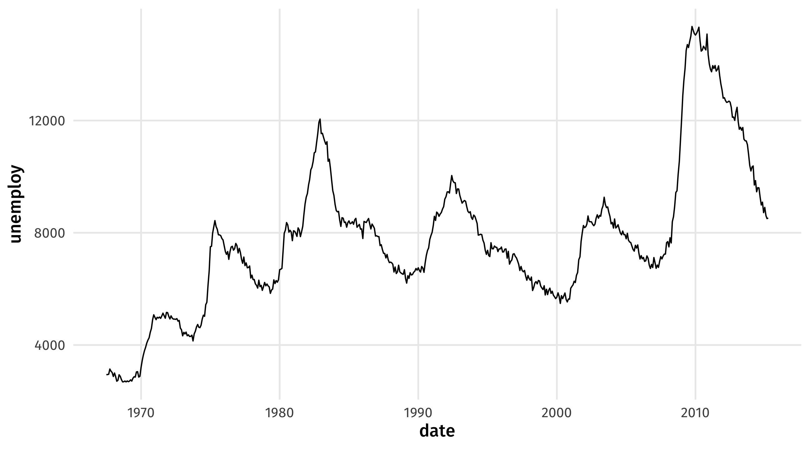
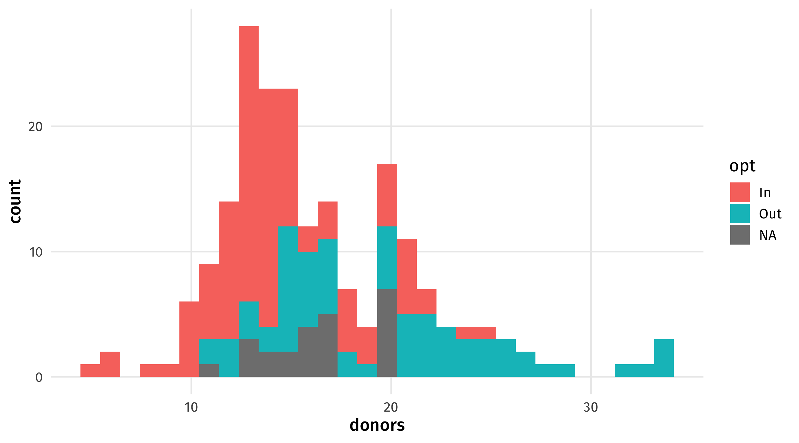

Data visualization
In-class example
Here’s the code we’ll be using in class:
- Day one: 👩💻 01-viz-code.R
- Day two: 👩💻 02-viz-code.R
Instructions:
Download it and store it with the rest of your materials for this course. If simply clicking doesn’t trigger download, you should right-click and select “save link as…”.
Upload to Posit Cloud
Presidential elections code-through
We’re working with elections_historic from the {socviz} package. This code loads {socviz}, {tidyverse} (where ggplot() lives) and the dataset:
library(tidyverse)
library(socviz)
elections_historic# A tibble: 49 × 19
election year winner win_party ec_pct popular_pct popular_margin votes
<int> <int> <chr> <chr> <dbl> <dbl> <dbl> <int>
1 10 1824 John Quinc… D.-R. 0.322 0.309 -0.104 1.13e5
2 11 1828 Andrew Jac… Dem. 0.682 0.559 0.122 6.43e5
3 12 1832 Andrew Jac… Dem. 0.766 0.547 0.178 7.03e5
4 13 1836 Martin Van… Dem. 0.578 0.508 0.142 7.63e5
5 14 1840 William He… Whig 0.796 0.529 0.0605 1.28e6
6 15 1844 James Polk Dem. 0.618 0.495 0.0145 1.34e6
7 16 1848 Zachary Ta… Whig 0.562 0.473 0.0479 1.36e6
8 17 1852 Franklin P… Dem. 0.858 0.508 0.0695 1.61e6
9 18 1856 James Buch… Dem. 0.588 0.453 0.122 1.84e6
10 19 1860 Abraham Li… Rep. 0.594 0.396 0.101 1.86e6
# ℹ 39 more rows
# ℹ 11 more variables: margin <int>, runner_up <chr>, ru_part <chr>,
# turnout_pct <dbl>, winner_lname <chr>, winner_label <chr>, ru_lname <chr>,
# ru_label <chr>, two_term <lgl>, ec_votes <dbl>, ec_denom <dbl>We start with ggplot():
ggplot()
Tell it what data we are plotting:
ggplot(data = elections_historic)Map the x and y-axis within aes():
ggplot(data = elections_historic, aes(x = popular_pct, y = ec_pct))
Add a point geometry:
ggplot(data = elections_historic, aes(x = popular_pct, y = ec_pct)) + geom_point()
Go back and map color and shape aesthetics:
ggplot(data = elections_historic, aes(x = popular_pct, y = ec_pct,
color = win_party, shape = two_term)) + geom_point()
Add labels by mapping the label aesthetic and adding a geom_text geometry:
ggplot(data = elections_historic, aes(x = popular_pct, y = ec_pct,
color = win_party, shape = two_term,
label = winner_label)) +
geom_point() +
geom_text()
Here’s the final code, all put together, changing the axis titles using labs():
# load libraries
library(tidyverse)
library(socviz)
# make plot
ggplot(elections_historic, aes(x = popular_pct, y = ec_pct, color = win_party,
shape = two_term, label = winner_label)) +
geom_point() + geom_text() + labs(x = "Percent of popular vote",
y = "Percent of Electoral College vote",
title = "Presidential Elections (1824-2016)",
color = NULL, size = NULL)
Bells and whistles
Here’s some other stuff I’m adding to make this graph better (that you’re not responsible for):
# load libraries
library(tidyverse)
library(socviz)
library(ggrepel)
ggplot(elections_historic, aes(x = popular_pct, y = ec_pct,
color = win_party, shape = two_term,
label = winner_label)) +
geom_point() +
geom_text_repel() +
labs(x = "Percent of popular vote",
y = "Percent of Electoral College vote",
title = "Presidential Elections (1824-2016)",
color = NULL, size = NULL) +
scale_y_continuous(labels = scales::percent) +
scale_x_continuous(labels = scales::percent) +
scale_color_manual(values = c(yellow, red, blue, "gray")) +
geom_hline(yintercept = 0.5, size = 1.4, color = "gray80") +
geom_vline(xintercept = 0.5, size = 1.4, color = "gray80") + theme(legend.position = "none")
Recessions
The recession graph from class:
ggplot(data = economics, aes(x = date, y = unemploy)) +
geom_line()
Organs
The organ data plot:
ggplot(data = organdata, aes(x = donors, fill = opt)) +
geom_histogram()